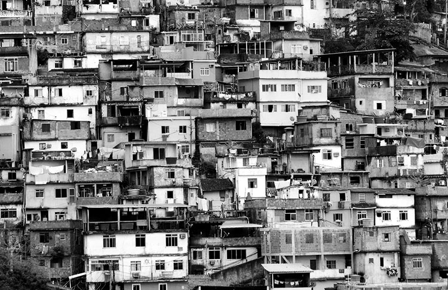
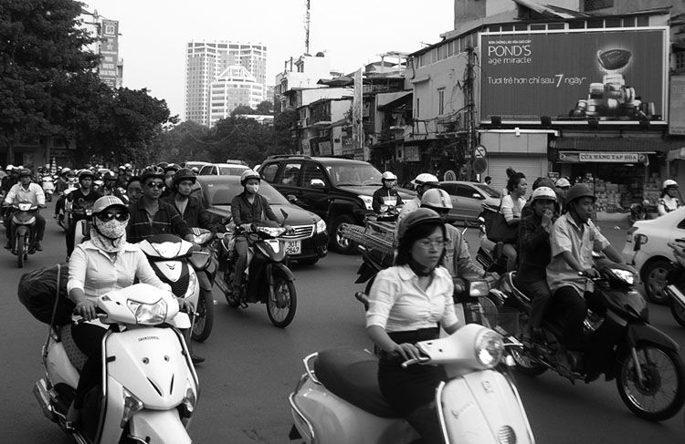
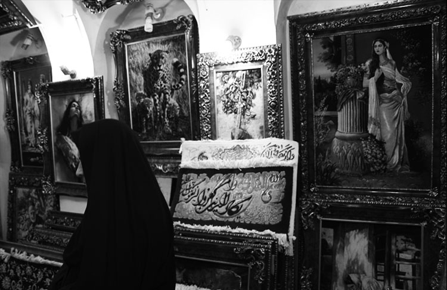
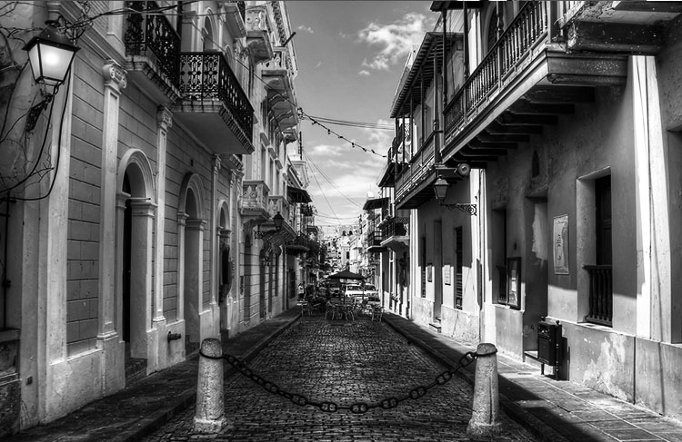
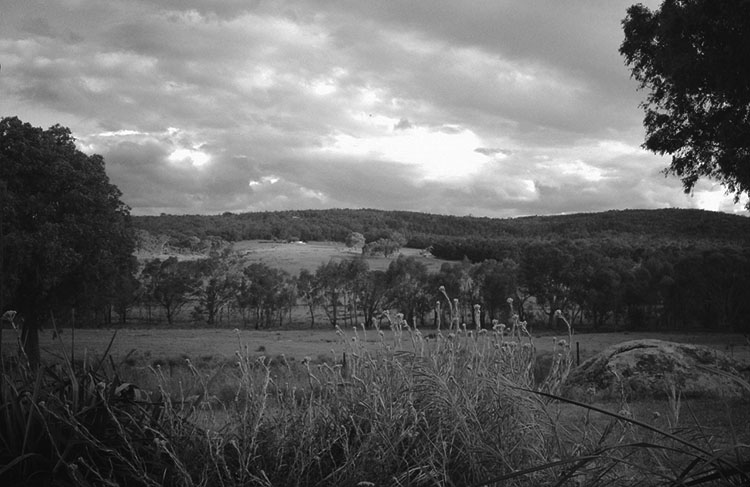

So you want to be Anderson Cooper and jet around to the political hot zones to report on the world's most intriguing stories?
Internships don't pay, but risking your life to report from Syria may cost you more than your graduate student loans. Instead, we've has put together ten destinations where young journos can sharpen their reporting skills, follow interesting local politics and still have a vacation this summer.
The Westgate Mall shooting last September in Kenya's capital Nairobi left 61 innocent shoppers dead. Islamist extremist group al-Shabaab claimed responsibility for the attacks, a reprisal for Kenya's military intervention in Somalia.
But you don't have to chase international terrorists: poaching remains a key issue in Kenya, with rhinos and elephants regularly killed for their tusks and horns.
A sunset safari drive is the perfect way to understand exactly why the Kenyan government recently implemented life imprisonment laws for illegal hunters.
 For months the streets of Rio de Janeiro have been filled with protestors furious at a public transport price rise hitting the poorest as billions get spent on World Cup preparations.
The infamous slums of Rio, known as the favelas, are being destroyed by the government as part of the World Cup cleanup.
Soak up the World Cup atmosphere but focus your reporting on the social injustices, not the sport.
Since the economy collapse of 2008, Spain has struggled with unemployment, with youth unemployment hanging around 50%.
How is the "lost generation" of Spaniards surviving with no jobs and no hope?
Well, partly by returning to their old fiesta roots.
The Argentinan Peso has collapsed in recent weeks, leaving the country's economy in crisis.
How will the country handle the constant issue of devaluation of its currency?
Luckily tourists still flock for the tango, wine and steak the country offers.
 The Vietnamese government recently deployed a crew of energetic ballroom dancers to break up an anti-China protest in Hanoi.
What other methods does the government use to control this busy city?
Investigate while eating street food and travelling everywhere by motorbike.
 Iran remains a country that few from the West visit, and althought it's nearly impossible for Americans, other nationals can get travel visas.
Isafan is one of the most popular tourists spots and is a Unesco World Heritage site.
Drink tea, enjoy the street art and visit a place few others do.
 The economy of the United State's sort-of 51st state has collapsed in recent months, partly because of the mass exodus of young people from the small island
What is left for those who stay behind?
A lot of reporting may have to occur with rum in small dark bars.
The Olympics will soon be a distant memory but the billions spent and the human rights abuses committed against the LGBT community aren't leaving Russia yet
Pick over the stories that everyone forgot once the medals were won.
Plus, vodka and sun and a topless Vladimir Putin.
Exactly one year ago Croatia joined the European Union. Who doesn't love anniversary journalism?
How is it adjusting to its new EU status?
Find out while drinking a local beer and wandering the quaint laneways.
 Bushfires are again ravaging summer, as climate change brings about more extreme weather.
But a new conservative government in Australia is ending renewable energy targets and cutting climate policies.
Talk politics with locals at the pub over a glass of red and a roo burger.